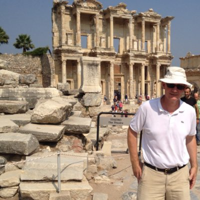

The National Science Foundation
Rochester Institute of Technology
The National Science Foundation
Rochester Institute of Technology
|  |
Clarence “Chip” B. Sheffield JrAssociate Professor |
Week 1 (Thursday June 2 at 1pm): Problem Exploration: Deep-Reading and Attention to Promote Critical Engagement with Research Literature (2 hr workshop)It is important to increase student awareness as to how they process text, their tactile interaction with it, the role of memory, analogy and writing/note-taking in conjunction with the act of reading and interpretation. How do students respond when confronting new words, concepts, and ideas, or encountering facts which seem implausible or false? Alternatively, how do they respond to text they find deeply meaningful and edifying? Week 5 (Thursday June 30 at 1pm): Data Analysis: Using Argument Diagrams, Concept Maps, and other Visual Approaches to Promote Critical Thinking (2 hr workshop)Images, drawings, and graphic representations can serve as a powerful visual analog for concepts and thoughts, and a meaningful way for students to increase their metacognitive awareness. Little attention has been paid to such visual pedagogical methods to promote student learning, and Nick Sousanis’ work Unflattening will serve as model. |

|
Laura ShackelfordAssociate Professor |
Week 3 (Thursday June 16 at 1 pm): Data Acquisition: Acquiring Data from Everyday Spaces with Social Impact and Ethical Considerations (2 hr workshop)Smart sensing technologies raise questions about how we orient ourselves to lived social spaces. After an initial review of works that exploit GPS, Kinect, mobile media and physically responsive technologies, students will create a plan for their own site-specific work to take advantage of their own insights into lived space. Students will think about how material spaces and spatial understanding are influenced by social categories of gender, race, class, hearing or deaf and hard of hearing, language proficiencies, size and physical abilities. Week 7 (Thursday July 14 at 1 pm): Dissemination: Narrative Engagement across Media (2 hr workshop)Narrative remains a primary mode of knowledge dissemination. What can a close analysis of narrative forms, practices, and media, in combination with narrative theory and cognitive theories of narrative, teach us about how and why narrative so engages and transforms human thinking, behavior, action, and culture. What can we learn about cognition and narrative modes of knowledge-production, circulation, and dissemination through a comparative analysis of narrative methods and forms? Reviewing key concepts such as story and plot, narration, focalization, characterization, story-space, world-building, and masterplots, students will use these and other concepts to explore the challenges we continually face in narrating actions, focusing particular attention on identifying the unique ways in which interactive and collaborative narrative practices meet these challenges, with consequences for scientific and technical, as well as visual dissemination. |

|
Babak ElahiAssociate Dean/ Professor |
Week 9 (Thursday July 28 at 1pm): Dissemination: Breaking Communication Barriers between Disciplines (2 hr workshop)This workshop asks participants to consider Steiner’s proposition that “translation is formally and pragmatically implicit in every act of communication” (Steiner). Students will be asked to consider acts of translation across domains of knowledge, across disciplines, and between academic and popular contexts. We will explore metaphor as a rhetorical device and metacognitive concept. Metaphors are instruments to conceive of disciplines and explicate problems. We will also consider the limits of metaphorical thinking, and how metaphors can be reconsidered. |